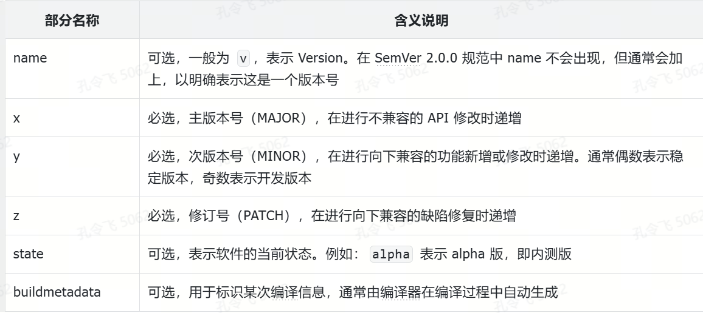
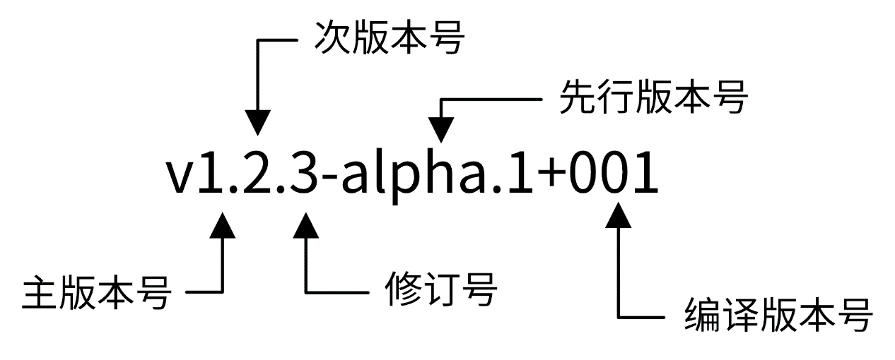

给应用添加版本号打印功能
应用发布后，经常会遇到以下两类问题：
- 应用在生产环境中出现缺陷，需要查看代码进行排查，但无法确定线上应用具体使用的是哪个版本，尽管发布系统可能记录了应用的发布版本，但服务器上的二进制文件可能已被替换；
- 用户希望升级应用，但不知道当前应用的版本号，无法判断是否需要进行升级。
针对上述问题，标准做法是为应用添加版本号功能，通过执行 -v/--version 参数，应用可以输出自身的版本号。需要注意的是，这里的版本号应能够精确定位到具体的代码快照，例如对应的 Git 提交哈希值。
应用程序的版本号具有以下功能：
- 对内，可以精准定位到构建的代码仓库快照，方便阅读代码并发现问题；
- 对外，用户可以清楚地知道使用的是哪个版本的应用，便于功能定位、问题反馈和更新软件；
- 版本号还可以向用户传递额外信息，例如帮助用户了解软件的开发阶段和版本状态。例如 v2.0.0 表示这是一个基于 v1.x.x 升级后的版本，该版本经过 v1 版本的打磨，从功能和稳定性上都有较大提升。v1.0.0-alpha 表示应用当前处于内测阶段，功能尚不完善，且可能存在较多缺陷。
因此，为应用添加版本号是 Go 应用标准且必需的功能。在实际开发中，需要先确定好版本号规范，然后基于规范给应用添加版本号功能。应用的版本号通常通过指定 -v/--version 命令行参数进行打印。
提示：
业界通常使用 -v/--version 命令行选项来输出版本信息，我们开发 Go 项目时，需要遵循业界常用的开发方式、使用习惯，以减少应用的理解成本。
SemVer 版本号规范
业界有多种版本号规范，目前使用最广泛的是语义化版本号规范，简称 SemVer 版本号规范。SemVer 规范的格式为：[name]x.y.z-[state+buildmetadata]，例如：v2.1.5、v1.2.3-alpha.1+001。每一部分的含义如表 5-1 所示。
表 5-1 SemVer 版本号含义

图 5-2 是一个符合 SemVer 版本号规范的版本号。
图 5-2 SemVer 版本号示例

在语义化版本规范中，不同的版本号格式代表着软件所处的不同阶段及其稳定性，例如：0.Y.Z 表示当前软件处于研发阶段，软件并不稳定，1.0.0 表示当前软件为初始的稳定版。
如何添加版本号？
在实际开发中，当完成一个应用特性开发后，会编译应用源码并发布到生产环境。为了定位问题或出于安全考虑（确认发布的是正确的版本），开发者通常需要了解当前应用的版本信息以及一些编译时的详细信息，例如编译时使用的 Go 版本、Git 目录是否干净，以及基于哪个 Git 提交 ID 进行的编译。在一个编译好的可执行程序中，通常可以通过类似。/appname -v 的方式来获取版本信息。
我们可以将这些信息写入版本号配置文件中，程序运行时从版本号配置文件中读取并显示。然而，在程序部署时，除了二进制文件外还需要额外的版本号配置文件，这种方式既不方便，又面临版本号配置文件被篡改的风险。另一种方式是将这些信息直接写入代码中，这样无需额外的版本号配置文件，但每次编译时都需要修改代码以更新版本号，这种实现方式同样不够优雅。
Go 官方提供了一种更优的方式：通过编译时指定 -ldflags -X importpath.name=value 参数，来为程序自动注入版本信息。
提示：
在实际开发中，绝大多数情况是使用 Git 进行源码版本管理，因此 miniblog 的版本功能也基于 Git 实现。
如何实现 Go 应用版本功能
先来看下 miniblog 实现版本号打印功能后的版本号打印效果，如下所示：
$ _output/mb-apiserver --version
v0.0.1
$ _output/mb-apiserver --version=raw
gitVersion: v0.0.1
gitCommit: 2e5f427e69e84f2796072a0fdd745b6407513049
gitTreeState: dirty
buildDate: 2025-06-10T15:03:14Z
goVersion: go1.24.4
compiler: gc
platform: linux/amd64
那么该如何实现版本功能呢？通过使用 Google 搜索“how to add version to golang app”，很容易找到大量相关实现方案。
通过查看相关文章，了解到这些文章普遍采用 go build -ldflags='-X main.Version=v1.0.0' 的方式实现版本号打印功能。通过这些文章的调研学习，不难得出一个结论：可以通过 -ldflags 参数为 Go 应用添加版本功能。其实，这也是 Go 项目开发中的标准实现方法。
接下来，可以通过 Google 进一步学习 go build -ldflags="-X main.Version=v1.0.0" 的具体操作含义：编译时通过指定 -ldflags 选项，将 v1.0.0 的值赋给 main 包中的 Version 变量。之后，程序通过打印 Version 变量的值，即可输出版本号 v1.0.0。
-ldflags 命令行选项用来将指定的参数传递给 Go 的链接器，格式为：-ldflags '[pattern=]arg list'，例如：-X importpath.name=value。运行 go tool link -h 可以查看链接器的使用帮助：
$ go tool link
usage: link [options] main.o
...
-X definition
add string value definition of the form importpath.name=value
...
-X importpath.name=value 告诉 Go 链接器将 value 赋值给 importpath 包中的 name 变量。需要注意，name 必须是 string 类型的变量，否则编译器会报以下错误：
# command-line-arguments
main.name: cannot set with -X: not a var of type string (type.main.name)
所以，使用 go build -ldflags "-X importpath.name=value" 可以实现为应用程序添加版本号的功能。下面，根据上述思路编写一个示例代码并进行测试，测试代码如代码清单 5-10 所示。
代码清单 5-10 添加版本号测试代码
package main
import (
"flag"
"fmt"
)
// 定义两个全局变量，用于存储版本信息和构建时间。
var (
// GitVersion 是语义化的版本号，默认值为 "v0.0.0-master+$Format:%h$"。
// 在实际使用中，GitVersion 通常会通过 -ldflags 参数在编译时被赋值为实际的版本号。
GitVersion = "v0.0.0-master+$Format:%h$"
// BuildDate 是构建时间，默认为 "1970-01-01T00:00:00Z"（UNIX 时间的起始时间）。
// 在实际使用中，BuildDate 通常会通过 -ldflags 参数在编译时被赋值为构建时的时间戳。
BuildDate = "1970-01-01T00:00:00Z"
)
func main() {
// 定义一个布尔类型的命令行标志变量 version，用于判断是否需要打印版本信息。
// 默认值为 false，描述信息为 "Print version info. "。
version := flag.Bool("version", false, "Print version info.")
// 解析命令行参数，将用户传入的标志值赋给对应的变量。
flag.Parse()
// 如果用户在命令行中指定了 -version 标志（即 version 的值为 true），
// 则打印 GitVersion 和 BuildDate 的值。
if *version {
fmt.Println（"GitVersion"， GitVersion） // 打印版本号。
fmt.Println（"BuildDate"， BuildDate） // 打印构建时间。
}
}
运行上述代码，输出结果如下：
$ go build -ldflags "-X main.GitVersion=v1.0.0 -X main.BuildDate=$(date +%F)" main.go
$ ./main -version
GitVersion v1.0.0
BuildDate 2025-02-01
可以看到，我们通过命令行成功为 main 二进制文件添加了版本功能，通过 -version 参数即可输出预期的版本信息。
给 miniblog 添加版本功能
上一节通过一个简单的示例演示了如何为程序添加版本号打印功能。本节将详细介绍如何为 miniblog 添加版本号打印功能。可以通过以下步骤为 miniblog 添加版本功能：
创建一个 version 包用于保存版本信息；
将版本信息注入到 version 包中；
miniblog 应用添加 --version 命令行选项。
创建一个 version 包
创建一个 pkg/version/version.go 文件，文件代码如代码清单 5-11 所示。
代码清单 5-11 version.go 代码内容
package version
import (
"encoding/json"
"fmt"
"runtime"
"github.com/gosuri/uitable"
)
var (
// gitVersion 是语义化的版本号。
gitVersion = "v0.0.0-master+$Format:%h$"
// buildDate 是 ISO8601 格式的构建时间， $（date -u +'%Y-%m-%dT%H:%M:%SZ'） 命令的输出。
buildDate = "1970-01-01T00:00:00Z"
// gitCommit 是 Git 的 SHA1 值，$（git rev-parse HEAD） 命令的输出。
gitCommit = "$Format:%H$"
// gitTreeState 代表构建时 Git 仓库的状态，可能的值有：clean， dirty。
gitTreeState = ""
)
// Info 包含了版本信息。
type Info struct {
GitVersion string `json:"gitVersion"`
GitCommit string `json:"gitCommit"`
GitTreeState string `json:"gitTreeState"`
BuildDate string `json:"buildDate"`
GoVersion string `json:"goVersion"`
Compiler string `json:"compiler"`
Platform string `json:"platform"`
}
// String 返回人性化的版本信息字符串。
func (info Info) String() string {
return info.GitVersion
}
// ToJSON 以 JSON 格式返回版本信息。
func (info Info) ToJSON() string {
s, _ := json.Marshal(info)
return string(s)
}
// Text 将版本信息编码为 UTF-8 格式的文本，并返回。
func (info Info) Text() string {
table := uitable.New()
table.RightAlign(0)
table.MaxColWidth = 80
table.Separator = " "
table.AddRow("gitVersion:", info.GitVersion)
table.AddRow("gitCommit:", info.GitCommit)
table.AddRow("gitTreeState:", info.GitTreeState)
table.AddRow("buildDate:", info.BuildDate)
table.AddRow("goVersion:", info.GoVersion)
table.AddRow("compiler:", info.Compiler)
table.AddRow("platform:", info.Platform)
return table.String()
}
// Get 返回详尽的代码库版本信息，用来标明二进制文件由哪个版本的代码构建。
func Get() Info {
// 以下变量通常由 -ldflags 进行设置
return Info{
GitVersion: gitVersion,
GitCommit: gitCommit,
GitTreeState: gitTreeState,
BuildDate: buildDate,
GoVersion: runtime.Version(),
Compiler: runtime.Compiler,
Platform: fmt.Sprintf("%s/%s", runtime.GOOS, runtime.GOARCH),
}
}
version 包用于记录版本号信息，而版本号功能几乎是所有 Go 应用都会用到的通用功能。因此，需要考虑将 version 包提供给其他外部应用程序使用。根据目录规范，应将 version 包放在 pkg/ 目录下，以便其他项目可以导入并使用 version 包。由于 version 包需要是面向第三方应用的包，因此需确保 version 包的功能稳定、完善，并能够独立对外提供预期的功能。
代码清单 5-11 定义了一个 Info 结构体，用于统一保存版本信息。Info 结构体记录了较为详细的构建信息，包括 Git 版本号、Git 提交 ID、Git 仓库状态、应用构建时间、Go 版本、用到的编译器和构建平台。
此外，Info 结构体还实现了以下方法，用于展示不同格式的版本信息：
将版本信息注入到 version 包中
接下来，可以通过 -ldflags -X "importpath.name=value" 构建参数将版本信息注入到 version 包中。
由于 miniblog 应用是通过 Makefile 进行构建的，因此需要在 Makefile 中实现版本信息和构建参数的配置。具体来说，需要将以下代码添加到 Makefile 文件中：
## 指定应用使用的 version 包，会通过 `-ldflags -X` 向该包中指定的变量注入值
VERSION_PACKAGE=github.com/ketitongxue/miniblog/pkg/version
## 定义 VERSION 语义化版本号
ifeq ($(origin VERSION), undefined)
VERSION := $(shell git describe --tags --always --match='v*')
endif
## 检查代码仓库是否是 dirty（默认 dirty）
GIT_TREE_STATE:="dirty"
ifeq (, $(shell git status --porcelain 2>/dev/null))
GIT_TREE_STATE="clean"
endif
GIT_COMMIT:=$(shell git rev-parse HEAD)
GO_LDFLAGS += \
-X $(VERSION_PACKAGE).gitVersion=$(VERSION) \
-X $(VERSION_PACKAGE).gitCommit=$(GIT_COMMIT) \
-X $(VERSION_PACKAGE).gitTreeState=$(GIT_TREE_STATE) \
-X $(VERSION_PACKAGE).buildDate=$(shell date -u +'%Y-%m-%dT%H:%M:%SZ')
上述 Makefile 代码，使用 git describe --tags --always --match='v*' 命令获取版本号。使用 date -u +'%Y-%m-%dT%H:%M:%SZ' 命令获取构建时间。使用 git rev-parse HEAD 获取构建时的提交 ID。
git describe --tags --always --match='v*' 命令的参数说明如下：
- --tags：使用所有标签，而不是仅使用带注释的标签（annotated tag）。示例如下：
- git tag <tagname>：生成一个不带注释的标签；
- git tag -a <tagname> -m '<message>'：生成一个带注释的标签。
- --always：如果仓库中没有可用的标签，则使用提交 ID 的缩写作为替代；
- --match <pattern>：只考虑与指定模式匹配的标签。例如，--match='v*' 会匹配以 “v” 开头的标签。
假设仓库中存在以下提交记录和标签：
* 8e27d05 (HEAD -> main) Latest commit
* f9d2cef (tag: v1.2.3) Feature update
* b43a1c7 (tag: v1.2.2) Bug fix
* 1a4f9c8 (tag: v1.2.1) Minor update
执行以下命令获取标签：
$ git describe --tags --always --match='v*'
如果当前 HEAD 指向 main 分支，但没有直接打标签，则结果为：
v1.2.3-1-g8e27d05
版本号 v1.2.3-1-g8e27d05 具体说明如下：
- v1.2.3：最近的匹配标签；
- -1：当前提交距离最近标签（v1.2.3）有 1 次提交；
- g8e27d05：当前提交的缩写哈希值。
如果当前分支没有匹配的标签（如没有以 “v” 开头的标签），则结果为：8e27d05。
上述 Makefile 通过 -ldflags 编译参数，向 version 包注入了 gitVersion、gitCommit、gitTreeState、buildDate。Info 结构体中的另外三个编译信息 GoVersion、Compiler、Platform 则可以使用 runtime 包来动态获取。获取代码如下：
func Get() Info {
// 以下变量通常由 -ldflags 进行设置
return Info{
GitVersion: gitVersion,
GitCommit: gitCommit,
GitTreeState: gitTreeState,
BuildDate: buildDate,
GoVersion: runtime.Version(),
Compiler: runtime.Compiler,
Platform: fmt.Sprintf("%s/%s", runtime.GOOS, runtime.GOARCH),
}
}
最后，还需要将 -ldflags 参数名及其值追加到 go build 命令行选项中。修改 Makefile 脚本中 build 规则，修改后的 build 规则如下：
.PHONY: build
build: tidy # 编译源码，依赖 tidy 目标自动添加/移除依赖包。
@go build -v -ldflags "$(GO_LDFLAGS)" -o $(OUTPUT_DIR)/mb-apiserver $(PROJ_ROOT_DIR)/cmd/mb-apiserver/main.go
miniblog 应用添加 --version 命令行选项
通过前面的步骤，在编译 miniblog 之后，所需的版本信息已成功注入 version 包中。接下来，还需要在 miniblog 主程序中调用 version 包打印版本信息。
编辑 cmd/mb-apiserver/app/server.go 文件，在 NewMiniBlogCommand 函数中添加以下代码：
// NewMiniBlogCommand 创建一个 *cobra.Command 对象，用于启动应用程序。
func NewMiniBlogCommand() *cobra.Command {
...
// 添加 --version 标志
version.AddFlags(cmd.PersistentFlags())
return cmd
}
// run 是主运行逻辑，负责初始化日志、解析配置、校验选项并启动服务器。
func run(opts *options.ServerOptions) error {
// 如果传入 --version，则打印版本信息并退出
version.PrintAndExitIfRequested()
...
}
version.AddFlags(cmd.PersistentFlags()) 用来给 mb-apiserver 命令添加 -v/--version 命令行选项。version.PrintAndExitIfRequested() 用来指定当 mb-apiserver 命令执行并传入 -v 命令行选项时，应用会打印版本号信息并退出。PrintAndExitIfRequested 函数代码实现如下：
// PrintAndExitIfRequested 将检查是否传递了 `--version` 标志，如果是，则打印版本并退出。
func PrintAndExitIfRequested() {
// 检查版本标志的值并打印相应的信息
if *versionFlag == VersionRaw {
fmt.Printf("%s\n", Get().Text())
os.Exit(0)
} else if *versionFlag == VersionEnabled {
fmt.Printf("%s\n", Get().String())
os.Exit(0)
}
}
通过上述代码，当执行 mb-apiserver --version 命令时，--version 命令行选项的值将被赋予给 version 包的 versionFlag 变量。随后，程序将运行 PrintAndExitIfRequested 函数。该函数根据 versionFlag 的值调用 version 包以获取版本信息，输出不同格式的版本信息并退出程序。
至此，miniblog 应用已经完成了版本号功能的开发，完整源码位于 feature/s05 分支。
测试 miniblog 版本号打印功能
开发完成后，执行以下命令来编译 mb-apiserver 组件源码，并打印版本号信息：
$ git tag -a v0.0.1 -m "release v0.0.1"
$ make build
$ _output/mb-apiserver --version
v0.0.1
$ _output/mb-apiserver --version=raw
2025/06/10 23:03:40 maxprocs: Leaving GOMAXPROCS=4: CPU quota undefined
2025/06/10 23:03:40 Using config file: /root/.miniblog/mb-apiserver.yaml
gitVersion: v0.0.1
gitCommit: 2e5f427e69e84f2796072a0fdd745b6407513049
gitTreeState: dirty
buildDate: 2025-06-10T15:03:14Z
goVersion: go1.24.4
compiler: gc
platform: linux/amd64
可以看到，mb-apiserver 程序根据 --version 的值输出了不同格式且内容详尽的版本信息。通过这些版本信息，可以精确定位当前应用所使用的代码及编译环境，为日后的故障排查奠定了坚实的基础。